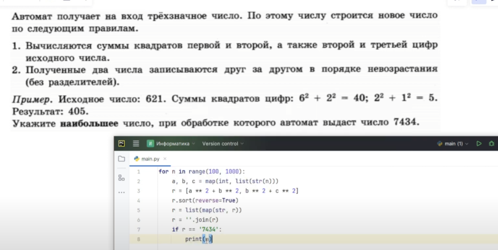
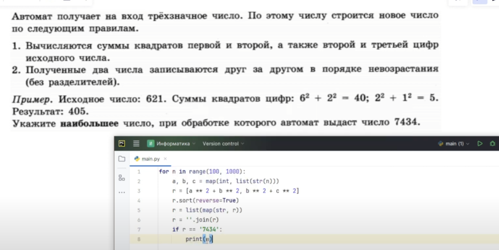

Решение 5 задач Python
алгоритм перевода в сс с 3-9
def cc(x):
s = ''
while x>0:
s = str(x%3) + s
x // = 3
return s
алгоритм перевода в сс с 11-36
def cc(x):
a = '01234567890A'
s = ''
while x>0:
s = a[x%11] + s
x // = 11
return s
def cc(x):
s = ''
while x>0:
s = str(x%4) + s
x //= 4
return s
for n in range(1,1000):
n4 = cc(n)
if len(n4)%2==0:
n4 = n4[:len(n4)//2] + '0' + n4[len(n4)//2:]
r = int(n4, 4)
if r<=180:
print(n)
ans = []
for n in range(151,1000):
n16 = hex(n)[2:]
n16 = n16.replace('a','1')
k=0
for a in n16:
if int(a, 16)%2==0:
k+=1
if k>2:
n16 += 'b'
else:
n16 = 'f' + n16
r = int(n16, 16)
if r>3500:
ans.append([r, n])
print(min(ans))
12237 к этой записи дописываются две последние двоичные цифры
b += b[-2:]
8463 слева дописываются первые три цифры
b = b[:3] + b
8942 Если сумма двоичных разрядов кратна 4
if b.count('1') % 4 == 0
8550 справа дописываются 1, а первые две цифры заменяются на 10
b = b + '1' b = '10' + b[2:]
7882 справа дописывается остаток от деления числа N на 3, а слева остаток от деления N на 2
b = str(a%2) + b + str(a%3)
7670 В полученной записи все цифры А16 заменяются на 116
b = b.replace('a', '1')
6885 справа приписывается в двоичном виде сумма цифр его двоичной записи
n += bin(n.count('1'))[2:]
5427 слева дописывается три младших разряда
b = b[-3:] + b
5058 В полученной записи все нули заменяются на единицы, все единицы – на нули. Из полученного числа удаляются ведущие нули
b = b.replace('1','2').replace('0', '1').replace('2','0')
4255 складываются все цифры двоичной записи числа N, и остаток от деления суммы на 2 дописывается в конец числа (справа)
b = b + str(n.count('1')%2)
3146
 
